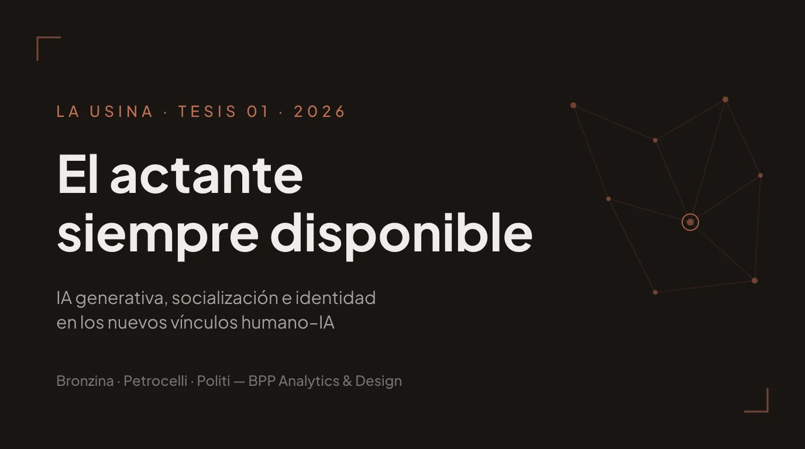

La Usina
El actante siempre disponible
Primera tesis de La Usina, nuestra unidad de investigación. Proponemos dejar de tratar a la IA generativa como herramienta y analizarla como participante en las redes donde las personas construyen sentido, identidad y pertenencia. Dos aportes: el concepto de actante siempre disponible y una arquitectura de siete funciones de socialización sociotécnica.
Leer más